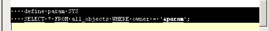
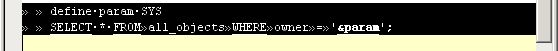

Text -> Tabify Selection (All)
Previous
Top
Next
Convert ALL spaces into tab character ever it is possible. For example :

gives

See
Text Menu
,
Text -> Untabify Selection
,
Text -> Tabify Selection (Leading)
,
Text -> Visible Spaces
.